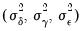
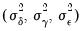
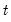

To estimate a pool equation specification, simply press the button on your pool object toolbar or select from the pool menu, and the basic pool estimation dialog will open:
First, you should specify the estimation settings in the lower portion of the dialog. Using the dropdown menu, you may choose between ordinary least squares regression, , two-stage least squares (instrumental variable) regression. If you select the latter, the dialog will differ slightly from this example, with the provision of an additional tab (page) for you to specify your instruments (see
“Instruments”).
You should also provide an estimation sample in the edit box. By default, EViews will use the specified sample string to form use the largest sample possible in each cross-section. An observation will be excluded if any of the explanatory or dependent variables
for that cross-section are unavailable in that period.
The checkbox for Balanced Sample instructs EViews to perform listwise exclusion over all cross-sections. EViews will eliminate an observation if data are unavailable
for any cross-section in that period. This exclusion ensures that estimates for each cross-section will be based on a common set of dates.
|
•
|
Common coefficients: — enter variables that have the same coefficient across all cross-section members of the pool. EViews will include a single coefficient for each variable, and will label the output using the original expression.
|
|
•
|
Cross-section specific coefficients: — list variables with different coefficients for each member of the pool. EViews will include a different coefficient for each cross-sectional unit, and will label the output using a combination of the cross-section identifier and the series name.
|
|
•
|
Period specific coefficients: — list variables with different coefficients for each observed period. EViews will include a different coefficient for each period unit, and will label the output using a combination of the period identifier and the series name.
|
You should account for individual and period effects using the dropdown menus. By default, EViews assumes that there are no effects so that the dropdown menus are both set to . You may change the default settings to allow for either or effects in either the cross-section or period dimension, or both.
If you select , EViews will estimate a feasible GLS specification assuming the presence of cross-section heteroskedasticity. If you select , EViews estimates a feasible GLS specification correcting for both cross-section heteroskedasticity and contemporaneous correlation. Similarly, allows for period heteroskedasticity, while corrects for both period heteroskedasticity and general correlation of observations within a given cross-section. Note that the SUR specifications are each examples of what is sometimes referred to as the Parks estimator.
Clicking on the tab in the dialog brings up a page displaying a variety of estimation options for pool estimation. Settings that are not currently applicable will be grayed out.
Note that the checkbox permits to you compute robust covariances without the leading degree of freedom correction term. This option may make it easier to match EViews results to those from other sources.
If you are estimating a specification that includes a random effects specification, EViews will provide you with a dropdown menu so that you may specify one of the methods for calculating estimates of the component variances. You may choose between the default , or methods. See
“Random Effects” for discussion of the differences between the methods. Note that the default Swamy-Arora method should be the most familiar from textbook discussions.
The checkbox labeled may be selected to require EViews to save all estimated GLS weights with the equation, regardless of their size. By default, EViews will not save estimated weights in system (SUR) settings, since the size of the required matrix may be quite large. If the weights are not saved with the equation, there may be some pool views and procedures that are not available.
The familiar and criterion edit boxes that allow you to set the convergence test for the coefficients and GLS weights.
If your specification contains AR terms, the dropdown menu allows you to specify starting values as a fraction of the OLS (with no AR) coefficients, zero, or user-specified values.
If is checked, EViews will display additional information about convergence settings and initial coefficient values (where relevant) at the top of the regression output.
The first two settings, and should be employed when you want to ensure that both coefficients and weighting matrices are iterated to convergence. If you select the first option, EViews will, at every iteration, update both the coefficient vector and the GLS weights; with the second option, the coefficient vector will be iterated to convergence, then the weights will be updated, then the coefficient vector will be iterated, and so forth. Note that the two settings are identical for GLS models without AR terms.
If you select one of the remaining two cases, and , the GLS weights will only be updated once. In both settings, the coefficients are first iterated to convergence, if necessary, in a model with no weights, and then the weights are computed using these first-stage coefficient estimates. If the first option is selected, EViews will then iterate the coefficients to convergence in a model that uses the first-stage weight estimates. If the second option is selected, the first-stage coefficients will only be iterated once. Note again that the two settings are identical for GLS models without AR terms.
To estimate a pool specification using instrumental variables techniques, you should select in the dropdown menu at the bottom of the main () dialog page. EViews will respond by creating a three-tab dialog in which the middle tab (page) is used to specify your instruments.
As with the regression specification, the instrument list specification is divided into a set of , , and instruments. The interpretation of these lists is the same as for the regressors; if there are cross-section specific instruments, the number of these instruments equals the product of the number of pool identifiers and the number of variables in the list; if there are period specific instruments, the number of corresponding instruments is the number of periods times the number of variables in the list.
Lastly, there is a checkbox labeled that will be displayed if your specification includes AR terms. Recall that when estimating an AR specification, EViews performs nonlinear least squares on an AR differenced specification. By default, EViews will add lagged values of the dependent and independent regressors to the corresponding lists of instrumental variables to account for the modified differenced specification. If, however, you desire greater control over the set of instruments, you may uncheck this setting.
For illustrative purposes, we employ the balanced firm-level data from Grunfeld (1958) that have been used extensively as an example dataset (e.g., Baltagi, 2005). The workfile (“Grunfeld_Baltagi_pool.WF1”) contains annual observations on investment (I?), firm value (F?), and capital stock (K?) for 10 large U.S. manufacturing firms for the 20 years from 1935-54.
A few of these summary statistics require discussion. First, the reported R-squared and F-statistics are based on the difference between the residuals sums of squares from the estimated model, and the sums of squares from a
single constant-only specification, not from a fixed-effect-only specification. As a result, the interpretation of these statistics is that they describe the explanatory power of the entire specification, including the estimated fixed effects. Second, the reported information criteria use, as the number of parameters, the number of estimated coefficients, including fixed effects. Lastly, the reported Durbin-Watson stat is formed simply by computing the first-order residual correlation on the stacked set of residuals.
Alternatively, we may produce estimates for the two way random effects specification. First, in the page, we set both the cross-section and period effects dropdown menus to . Note that the dialog changes to show that weighted estimation is not available with random effects (nor is AR estimation).
Next, in the page we estimate the coefficient covariance using the method and we change the to use the method of computing the estimates of the random component variances.
Lastly, we click on to estimate the model.
Here, we see that the estimated cross-section, period, and idiosyncratic error component standard deviations are 89.26, 15.78, and 51.72, respectively. As seen from the values of Rho, these components comprise 0.73, 0.02 and 0.25 of the total variance. Taking the cross-section component, for example, Rho is computed as:
In our last example, we consider the use of the @INGRP pool function to estimate an specification containing group dummy variables (see “Pool Series”). Suppose we modify our pool definition so that we have defined a group named “MYGROUP” containing the identifiers “GE”, “GM”, and “GY”. We may then estimate a pool specification using the common regressor list:
Select to examine your specification. EViews estimates your pool as a system of equations, one for each cross-section unit.
will change the display to show the results from the pooled estimation.
You can view your residuals in spreadsheet or graphical format by selecting or . EViews will display the residuals for each cross-sectional equation. Each residual will be named using the base name RES, followed by the cross-section identifier.
If you wish to save the residuals in series for later use, select . This procedure is particularly useful if you wish to form specification or hypothesis tests using the residuals.
To perform forecasts using a pool equation you will first make a model. Select to create an untitled model object that incorporates all of the estimated coefficients. If desired, this model can be edited. Solving the model will generate forecasts for the dependent variable for each of the cross-section units. For further details, see
“Models”.
The basic EViews pool specification in Equation (53.2) allows for

slope coefficients that are common to all individuals and periods, as well as coefficients that are either cross-section or period specific. Before turning to the general specification, we consider three extreme cases.

|
(53.9)
|

|
(53.13)
|
EViews handles the random effects models using feasible GLS techniques. The first step, estimation of the covariance matrix for the composite error formed by the effects and the residual (e.g., in the two-way random effects specification), uses one of the quadratic unbiased estimators (QUE) from Swamy-Arora, Wallace-Hussain, or Wansbeek-Kapteyn. Briefly, the three QUE methods use the expected values from quadratic forms in one or more sets of first-stage estimated residuals to compute moment estimates of the component variances . The methods differ only in the specifications estimated in evaluating the residuals, and the resulting forms of the moment equations and estimators.
We term this a Cross-section SUR specification since it involves covariances across cross-sections as in a seemingly unrelated regressions type framework (where each equation corresponds to a cross-section).
We term this a Period SUR specification since it involves covariances across periods within a given cross-section, as in a seemingly unrelated regressions framework with period specific equations. In estimating a specification with Period SUR, we employ residuals obtained from first stage estimates to form an estimate of

. In the second stage, we perform feasible GLS.
See “Contemporaneous Covariances (Cross-section SUR)” for related discussion of errors clustered-by-period.

|
(53.31)
|
The White cross-section (period cluster) method assumes that the errors are contemporaneously (cross-sectionally) correlated. The method treats the pool regression as a multivariate regression (with an equation for each cross-section), and computes robust standard errors for the system of equations. This estimator is robust to cross-equation (contemporaneous) correlation and heteroskedasticity. See Wooldridge (2002, p. 148-153) and Arellano (1987).
Alternatively, the White period (cross-section cluster) method assumes that the errors for a cross-section are heteroskedastic and serially correlated. The estimator is designed to accommodate arbitrary heteroskedasticity and within cross-section serial correlation.
The White two-way cluster method allows for both cross-section and period clustering.
In contrast, the White (diagonal) method is robust to observation specific heteroskedasticity in the disturbances, but not to correlation between residuals for different observations.
The remaining methods are variants of the first two White statistics in which residuals are replaced by moment estimators for the unconditional variances. These methods, which are variants of the so-called Panel Corrected Standard Error (PCSE) methodology (Beck and Katz, 1995), are robust to unrestricted unconditional variance matrices

and , but place additional restrictions on the conditional variance matrices.
For example, the Cross-section SUR (PCSE) method handles cross-section correlation (period clustering) by replacing the outer product of the cross-section residuals in the White cross-section (period clustered) computation with an estimate of the (contemporaneous) cross-section residual covariance matrix

:
Analogously, the Period SUR (PCSE) handles between period correlation (cross-section clustering) by replacing the outer product of the period residuals in the White period (cross-section clustered) computation with an estimate of the period covariance

:


. See “Specifying AR Terms” for additional discussion.
EViews handles the random effects models using feasible GLS techniques. The first step, estimation of the covariance matrix for the composite error formed by the effects and the residual (e.g., in the two-way random effects specification), uses one of the quadratic unbiased estimators (QUE) from Swamy-Arora, Wallace-Hussain, or Wansbeek-Kapteyn. Briefly, the three QUE methods use the expected values from quadratic forms in one or more sets of first-stage estimated residuals to compute moment estimates of the component variances . The methods differ only in the specifications estimated in evaluating the residuals, and the resulting forms of the moment equations and estimators.Additional details on random effects models are provided in Baltagi (2005), Baltagi and Chang (1994), Wansbeek and Kapteyn (1989). Note that your component estimates may differ slightly from those obtained from other sources since EViews always uses the more complicated unbiased estimators involving traces of matrices that depend on the data (see Baltagi (2005) for discussion, especially “Note 3” on p. 28).If instrumental variables estimation is specified with random effects, EViews will GLS transform both the data and the instruments prior to estimation. This approach to random effects estimation has been termed generalized two-stage least squares (G2SLS). See Baltagi (2005, p. 113-116) and “Random Effects and GLS” for additional discussion.and
not vary with  and
, respectively.)
For example, the Cross-section SUR (PCSE) method handles cross-section correlation (period clustering) by replacing the outer product of the cross-section residuals in the White cross-section (period clustered) computation with an estimate of the (contemporaneous) cross-section residual covariance matrix is the dependent variable, and
is the dependent variable, and  is a
is a  ‑vector of regressors, and
‑vector of regressors, and  are the error terms for cross-sectional units observed for dated periods
are the error terms for cross-sectional units observed for dated periods  . The
. The  parameter represents the overall constant in the model, while the
parameter represents the overall constant in the model, while the  and represent cross-section or period specific effects (random or fixed). Identification obviously requires that the
and represent cross-section or period specific effects (random or fixed). Identification obviously requires that the  coefficients have restrictions placed upon them. They may be divided into sets of common (across cross-section and periods), cross-section specific, and period specific regressor parameters.
coefficients have restrictions placed upon them. They may be divided into sets of common (across cross-section and periods), cross-section specific, and period specific regressor parameters.  cross-sectional equations each with
cross-sectional equations each with  observations stacked on top of one another:
observations stacked on top of one another: -element unit vector, is the
-element unit vector, is the  -element identity matrix, and
-element identity matrix, and  is a vector containing all of the period effects, .
is a vector containing all of the period effects, .  period specific equations, each with
period specific equations, each with  observations stacked on top of one another.
observations stacked on top of one another. , where is a
, where is a  -element unit vector, is the
-element unit vector, is the  -element identity matrix, and
-element identity matrix, and  is a vector containing all of the cross-section effects, .
is a vector containing all of the cross-section effects, .  and
and  are set up to impose any restrictions on the data and parameters between cross-sectional units and periods, and where the general form of the unconditional error covariance matrix is given by:
are set up to impose any restrictions on the data and parameters between cross-sectional units and periods, and where the general form of the unconditional error covariance matrix is given by: coefficients in
coefficients in  , each corresponding to an element of
, each corresponding to an element of  .
. coefficients are cross-section specific, we have:
coefficients are cross-section specific, we have: in each for a total of slope coefficients.
in each for a total of slope coefficients. coefficients are period specific, the specification may be written as:
coefficients are period specific, the specification may be written as: into the three groups (common regressors , cross-section specific regressors , and period specific regressors ), we have:
into the three groups (common regressors , cross-section specific regressors , and period specific regressors ), we have: common regressors,
common regressors,  cross-section specific regressors, and period specific regressors, there are a total of regressors in
cross-section specific regressors, and period specific regressors, there are a total of regressors in  .
. for each regressor in the cross-section regressor list and
for each regressor in the cross-section regressor list and  for each regressor in the period-specific list, and using them in the regression. Note that estimating models with cross-section or period specific coefficients may lead to the generation of a large number of implicit interaction variables, and may be computationally intensive, or lead to singularities in estimation.
for each regressor in the period-specific list, and using them in the regression. Note that estimating models with cross-section or period specific coefficients may lead to the generation of a large number of implicit interaction variables, and may be computationally intensive, or lead to singularities in estimation. is either not present, or is specified as a fixed effect. We then allow the residuals to follow a general AR process:
is either not present, or is specified as a fixed effect. We then allow the residuals to follow a general AR process: , where the innovations are independent and identically distributed, assuming further that there is no unit root. Note that we allow the autocorrelation coefficients
, where the innovations are independent and identically distributed, assuming further that there is no unit root. Note that we allow the autocorrelation coefficients  to be cross-section, but not period specific.
to be cross-section, but not period specific. and
and  may be handled using fixed or random effects methods.
may be handled using fixed or random effects methods. and
and  are realizations of independent random variables with mean zero and finite variance. Most importantly, the random effects specification assumes that the effect is uncorrelated with the idiosyncratic residual
are realizations of independent random variables with mean zero and finite variance. Most importantly, the random effects specification assumes that the effect is uncorrelated with the idiosyncratic residual  .
. ,
,  ,
,  and
and  with
with  and
and  , where contains and, if estimated by fixed effects, the relevant cross-section or period effects ().
, where contains and, if estimated by fixed effects, the relevant cross-section or period effects (). ,
,  ,
,  and
and  with , where contains
with , where contains  and, if estimated by fixed effects, the relevant cross-section or period effects ().
and, if estimated by fixed effects, the relevant cross-section or period effects (). and
and  , but restricts residuals in different periods to be uncorrelated. Specifically, we assume that:
, but restricts residuals in different periods to be uncorrelated. Specifically, we assume that: ,
,  ,
,  and
and  with
with  . The errors may be thought of as cross-sectionally correlated. Alternately, this error structure is sometimes referred to as clustered by period since observations for a given period are correlated (form a cluster). Note that in this specification the contemporaneous covariances do not vary over
. The errors may be thought of as cross-sectionally correlated. Alternately, this error structure is sometimes referred to as clustered by period since observations for a given period are correlated (form a cluster). Note that in this specification the contemporaneous covariances do not vary over  .
.  , where,
, where, ,
,  ,
,  and
and  with . Note that in this specification the heteroskedasticity and serial correlation does not vary across cross-sections
with . Note that in this specification the heteroskedasticity and serial correlation does not vary across cross-sections  .
. , where,
, where, and . These covariance estimators are robust to heteroskedasticity across cross-sections or periods, respectively, but not to general correlation of residuals.
and . These covariance estimators are robust to heteroskedasticity across cross-sections or periods, respectively, but not to general correlation of residuals.